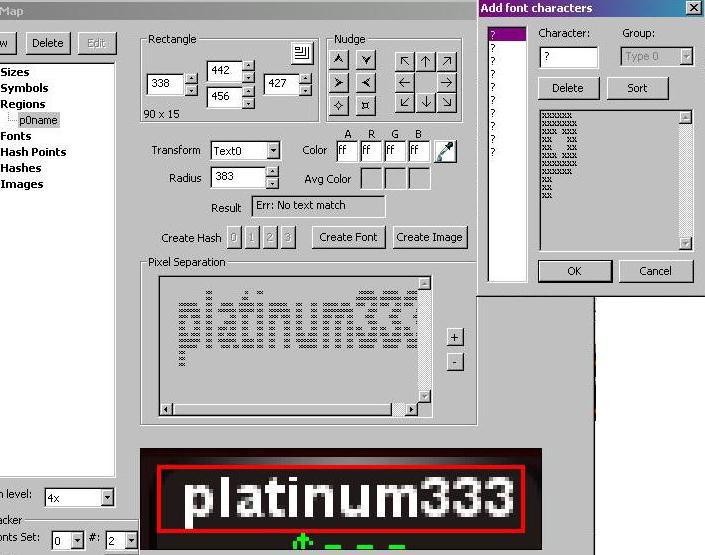

Scraping fonts which are glued together
This chapter is about font creation, precisely about the main difficulty that can happen: sometime two or more characters seem to touch each other, they are printed without any visible distance. This can cause problems because the scraper tries to recognize one character after another, but out of the box it can’t handle groups of characters that look like something unknown.
At the first picture below you see the good case: OpenScrape tries to recognize the playername “platinum333” and the first character “p” gets properly separated from the rest. All we have to do here: tell OpenScrape that this group of pixels is a “p”.

The second character “l” works also properly, but the next two characters are glued together: they can’t be separated by a vertical empty line of pixels. OpenScrape would like to know what “at” means in the alphabet..

Unfortunatelly “at” is no proper character, but there is a little trick to separate these two characters. We temporary make the boundaries of the name-region smaller so that it only contains the first of these two characters — the “a”. Then OpenScrape will try to recognize all characters in this small region, which contains only the pixels of “a”. Now we can define “a” just like any other normal font.

We repeat this process for the second critical character “t”. Then both of them can be recognized individually.

Once this got done we can restore the original region. The first 4 characters get now recognized properly and we can continue with the rest.